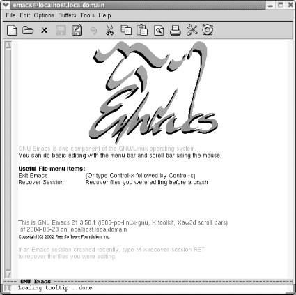

{% include JB/setup %}
{% raw %}
<div>
<div class="book" xml:lang="en"><div class="book"><div class="book"><div class="book"><h1 class="title"><a id="gnu3-CHP-1-SECT-4" class="calibre1"></a>Starting Emacs</h1></div></div></div><p class="copyright">To start Emacs,
<a id="gnu3-CHP-1-ITERM-1560" class="calibre2"></a>
            <a id="gnu3-CHP-1-ITERM-1561" class="calibre2"></a>simply click on the Emacs icon or type
<span><strong class="calibre5">emacs</strong></span> on the command line and press
Enter.<sup class="calibre6">[<a id="gnu3-CHP-1-FNOTE-1" href="#ftn.gnu3-CHP-1-FNOTE-1" class="calibre2">1</a>]</sup>
         </p><div class="book"><a id="ch01-2-fm2xml" class="calibre2"></a><table class="calibre8"><colgroup class="calibre9"><col class="calibre10"/></colgroup><tbody class="calibre15"><tr class="calibre12"><td class="calibre17">
                        <p class="copyright">Click on the Emacs icon or, from the command line, type: <span><strong class="calibre5">emacs Enter</strong></span>
                        </p>
                     </td></tr><tr class="calibre12"><td class="calibre17">
                        <p class="copyright">
                           </p><div class="book"><div class="mediaobject"><a id="I_1_tt6" class="calibre2"></a></div></div><p class="copyright">
                        </p>
                     </td></tr><tr class="calibre12"><td class="calibre19">
                        <p class="copyright">Starting Emacs.</p>
                     </td></tr></tbody></table></div><p class="copyright">You'll see a short message describing a few
important menu items and the version of Emacs that
you're running. It may appear as a graphical splash
screen (like the one shown here) or a text splash screen. This
message disappears as soon as you type the first character. Emacs
then puts you in an (almost) empty buffer called
<code class="calibre21">*scratch*</code>, an ideal place for you to experiment.</p><div class="book"><br class="book"/><hr class="calibre4"/><div class="book"><p class="copyright"><sup class="calibre6">[<a id="ftn.gnu3-CHP-1-FNOTE-1" href="#gnu3-CHP-1-FNOTE-1" class="calibre2">1</a>] </sup>How you start Emacs may vary by platform.
Linux has no icon on the desktop by default; Windows and Mac OS X do
(if you've installed Emacs on these platforms). Note
that Mac OS X comes with a version of GNU Emacs installed in
<span><em class="calibre7">/usr/bin</em></span>, and that is what runs by default when
you start up Emacs using the Terminal application. You
won't be able to use the mouse at all if you run
Emacs in the Terminal application, and there are a number of other
limitations as well. Better versions of GNU Emacs are available to
you; see <a class="calibre2" href="ch13.html" title="Chapter 13. Platform-Specific Considerations">Chapter 13</a> for details.</p></div></div></div></div>

{% endraw %}

